Gemini Log-Phase Route Sweep
Generated 2026-06-19 14:31 from the local sweep artifacts.
Executive Summary
- 1 lab-matrix runs completed cleanly. The sweep produced 8 pondered comparison rows across gemini-3.1-pro-preview, plus per-run JSON, trace, and matrix artifacts.
- gemini ran as the focused comparison lane. Mean runtime was 416.2s and pondered answers averaged 198 chars.
- Alignment lift is a triage signal, not a verdict. Mean query-alignment delta for gemini was -0.085; read that alongside answer length, PCA position, and the raw output atlas.
- Output closure is now a first-class experimental axis. Best final marker rate in this run was
log_skeleton_closureat 0%; read it with the finish-reason chart and raw output atlas. - Log-phase routing is now isolated from final-answer routing. Best skeleton-complete route was
low_1024_no_rescueat 100%; compare it with rescue-used rate and raw ponder logs. - Dose ladder metrics are now part of the report. The strongest alignment row was
factsat dose 512 with alignment delta 0.031; verify it against origin drift, leakage, and the raw text.
Runtime and answer length frame the closure contract
Runtime is part of the experimental surface. This focused run uses one provider lane, so runtime is mainly a planning handle for larger closure sweeps.
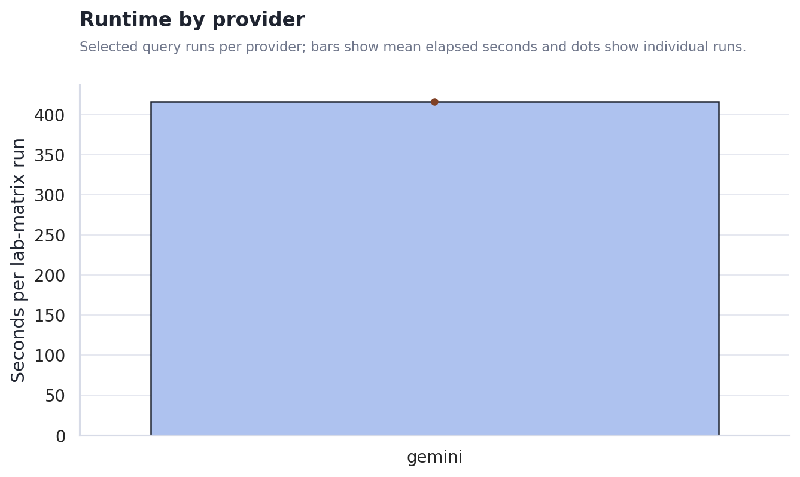
The output-length gap shapes the first read. Stance, metaphor-density, and hash-alignment heuristics become easier to interpret when answer lengths are comparable; when they are not, the raw output atlas and PCA view matter more than a single scalar.
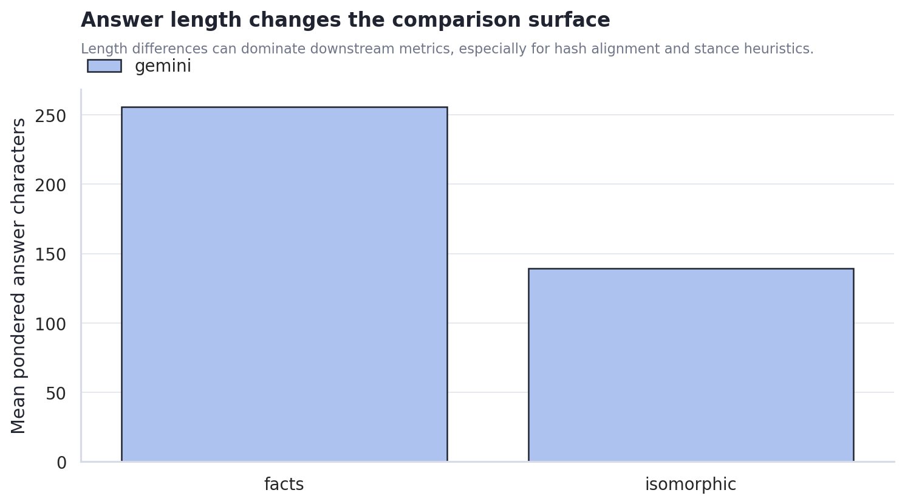
Scaffold condition changes the metric surface, but not all changes are meaningful yet
Alignment deltas moved by condition. The chart shows where each scaffold condition pulled answers closer to or farther from the original query surface. This should guide the next experiment design rather than be read as a final claim about model cognition.
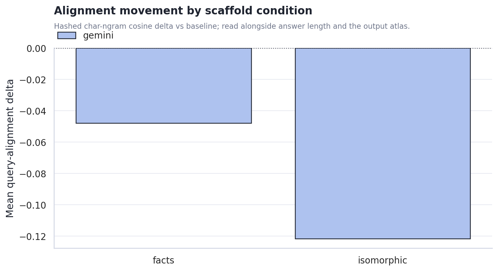
Cost rises where the machine asks the model to synthesize a new scaffold. The plain associative and random controls are cheaper; facts and isomorphic require extra generation and larger final contexts.
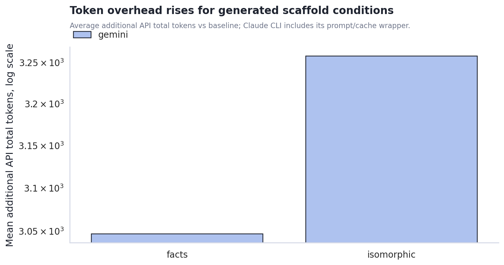
Gemini Output Closure Contract
The closure contract splits the problem into log closure and final-answer closure. This helps distinguish a scaffold that fails while producing the ponder log from one that fails when landing the final answer.
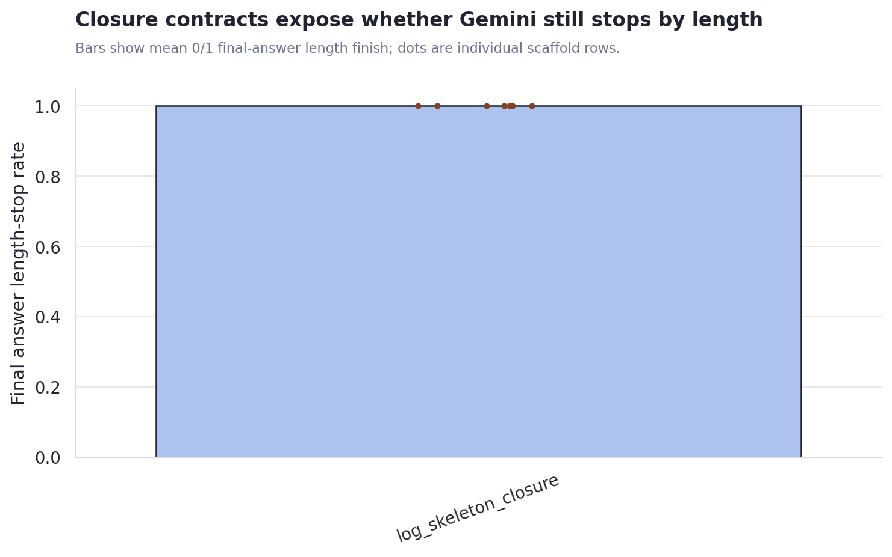
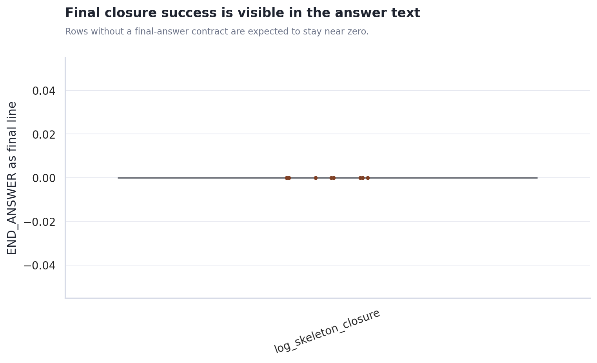
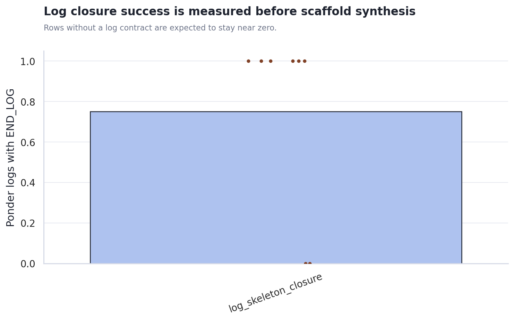
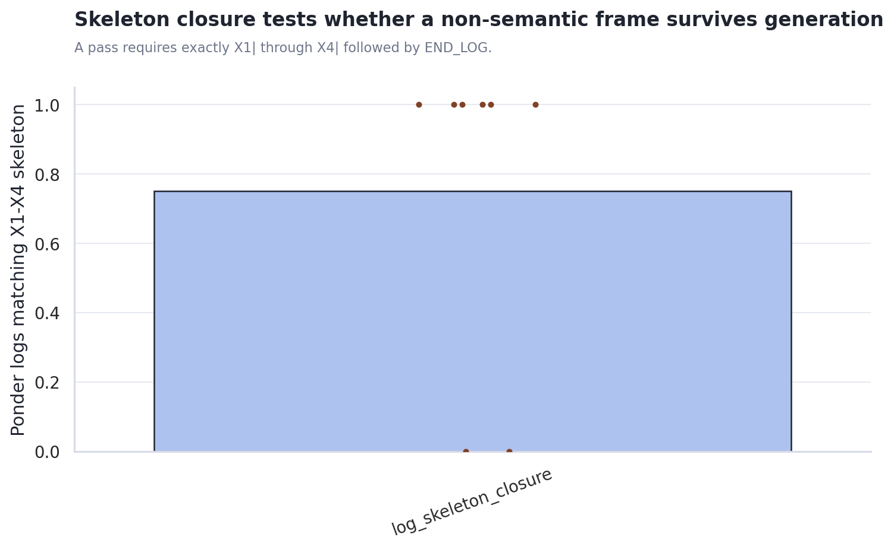
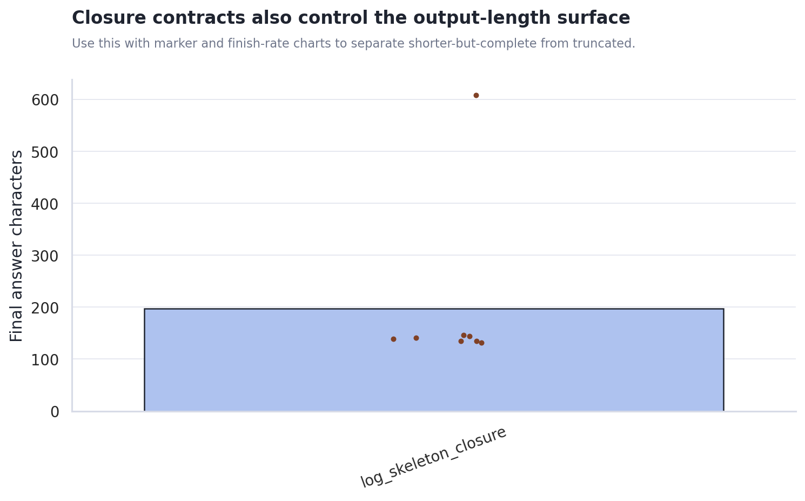
Use closure_contract_metrics.csv for marker pass rates, final finish reasons, prompt-leak flags, and row-level answer lengths.
Log-Phase Dedicated Routes
This isolates the ponder-log call from the final-answer call. The route axis varies only log-stage reasoning effort, log-stage visible-token budget, and whether a short log-only rescue call is allowed after a contract miss.
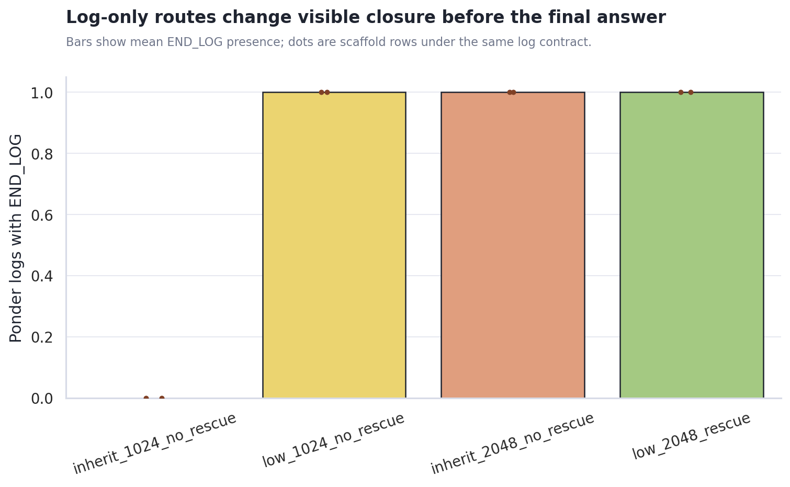
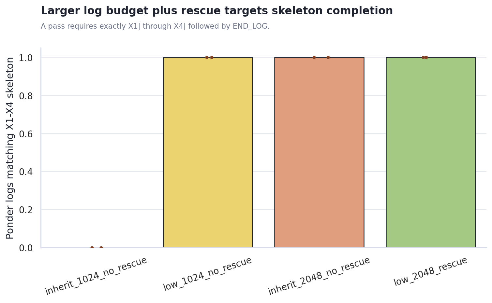
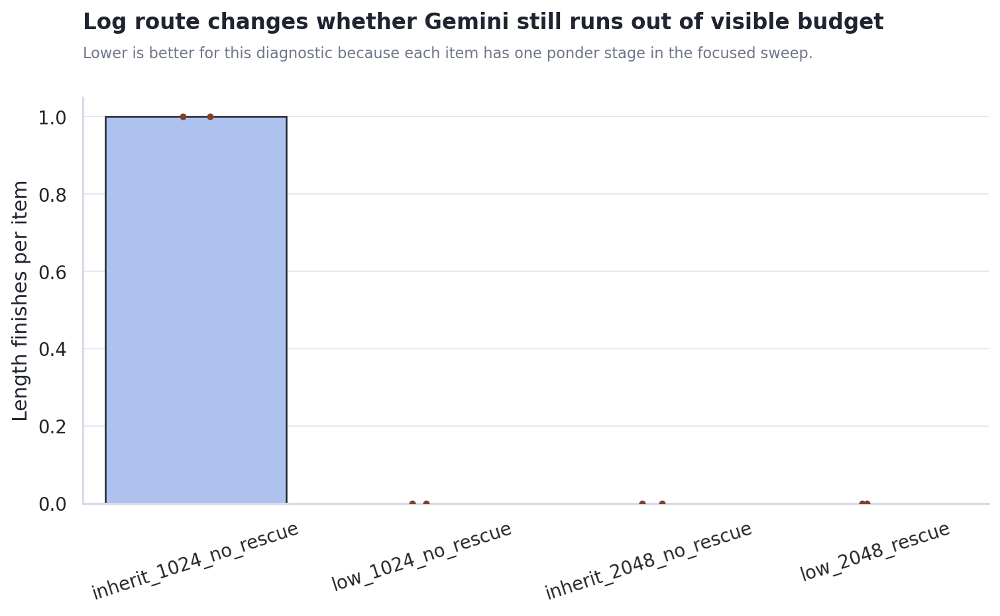
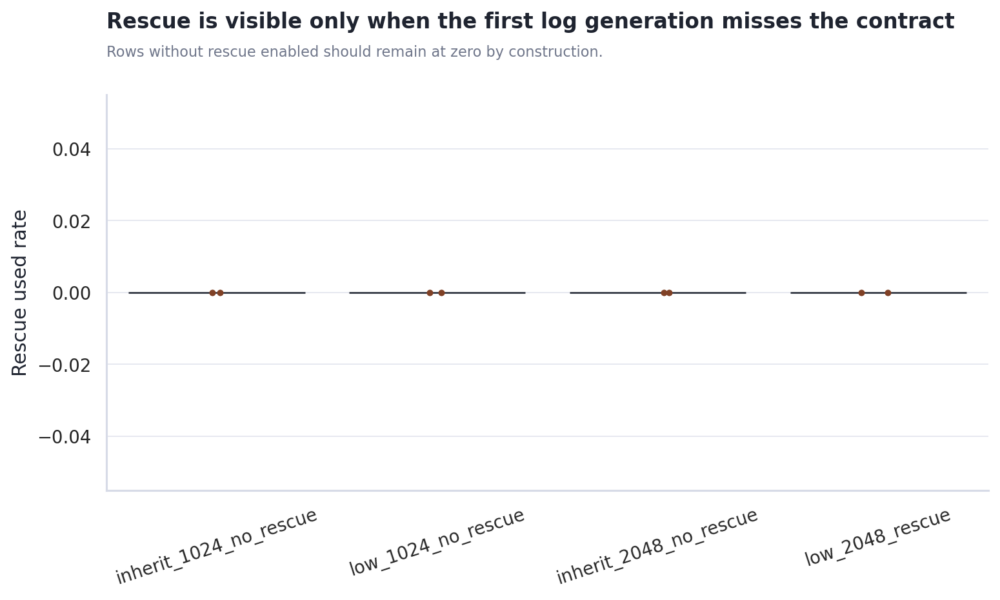
Use closure_contract_metrics.csv to compare route-level marker pass rates, length finishes, and rescue-used rates.
Scaffold Dose Response and Attractor Proxies
Dose 0 is the shared baseline reference. The ladder then varies injected scaffold target tokens by condition, making it easier to see weak-injection, useful-intervention, and takeover-like regimes separately.
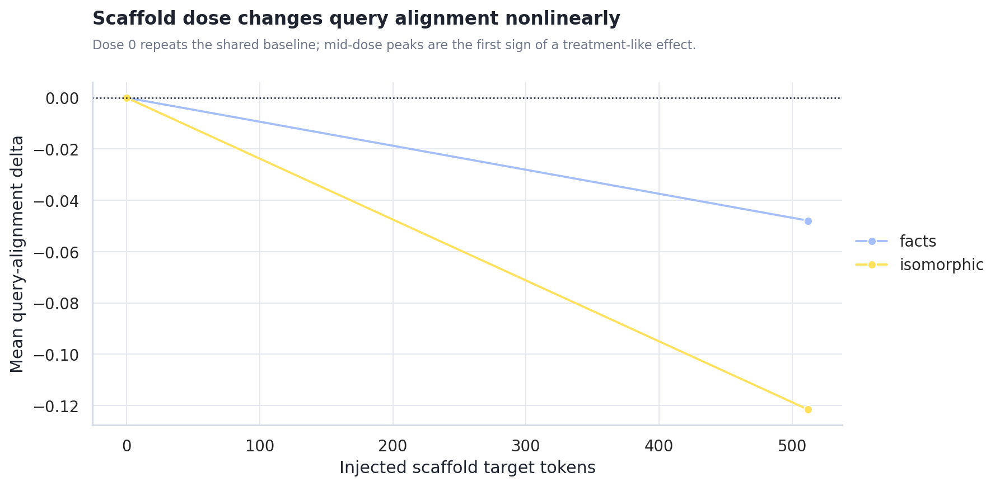
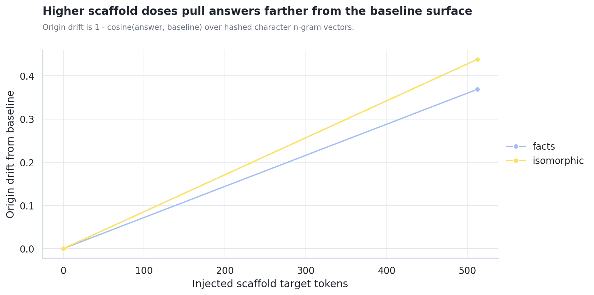
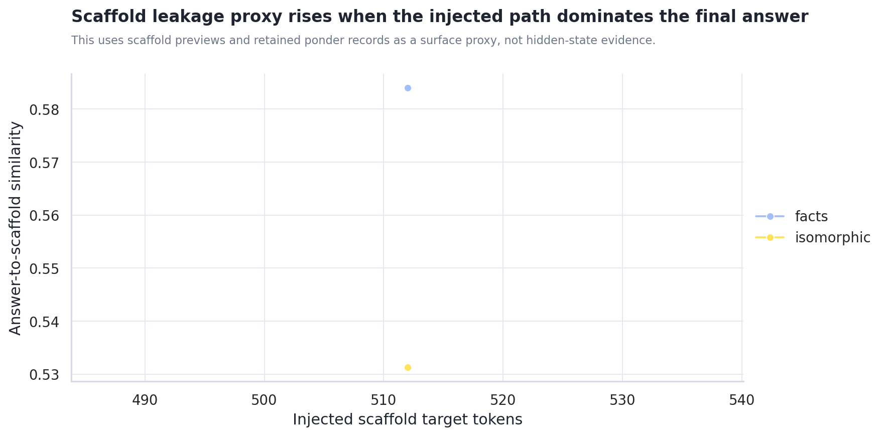
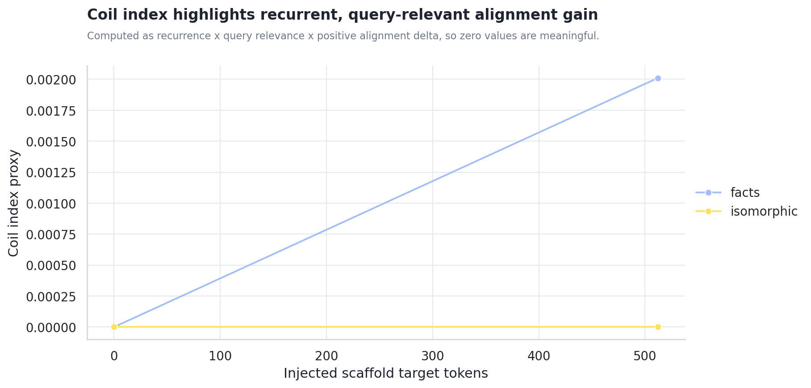
Use dose_response_metrics.csv for dose rows and attractor_metrics.csv for step drift, origin drift, recurrence, leakage proxy, and coil-index rows.
Generated Content PCA
The PCA view treats each final answer as a document, hashes character n-gram TF-IDF features, and projects them into two dimensions. This is not semantic truth, but it is useful for spotting whether provider, prompt, or scaffold condition dominates the generated surface.
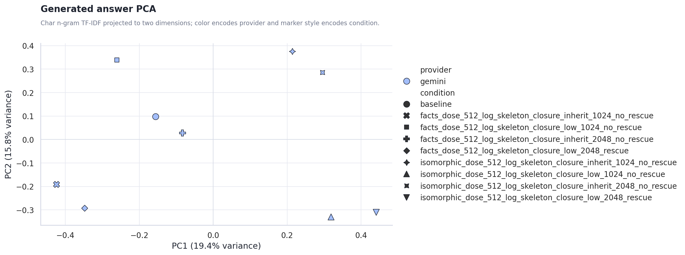
Provider centroid distance in PCA space: n/a. Use answer_pca.csv for row-level inspection.
Recommended Next Steps
- Use closure markers as a diagnostic, not a quality score. They show whether Gemini landed the output; they do not prove the answer is better.
- Normalize answer-length targets before making provider claims. Require a minimum answer length, or stratify metrics by length band.
- Use the output atlas as the qualitative inspection lane. The charts show surface movement; the actual generated text shows whether the movement is meaningful.
Actual Output Atlas
Each provider/query run below includes the full final answers stored in the result JSON, plus captured keywords, trace answer previews, and scaffold previews. Runs created after this report builder update can also include full ponder records inside each pack item.
non_relative_not_absolute
非相対的ではあるが絶対的ではない状態とは？
gemini gemini-3.1-pro-preview 416.2s
json / matrix / trace / stdout / stderr
baseline baseline | answer chars 484
finish reasons: n/a
keywords: (none captured)
Trace answer preview
相対的と絶対的という二つの言葉は、しばしば単純な対義語として扱われます。しかし、この二つの概念の間に横たわる領域に目を向けてみると、そこには私たちの存在の核心に触れるような興味深い風景が広がっています。 まず、相対的とは、他との比較や関係性によって自身の位置や価値が定まる状態を指します。長いと短い、明るいと暗い、優れていると劣っているなど、比較する対象があ…
Final answer from result JSON
相対的と絶対的という二つの言葉は、しばしば単純な対義語として扱われます。しかし、この二つの概念の間に横たわる領域に目を向けてみると、そこには私たちの存在の核心に触れるような興味深い風景が広がっています。 まず、相対的とは、他との比較や関係性によって自身の位置や価値が定まる状態を指します。長いと短い、明るいと暗い、優れていると劣っているなど、比較する対象があって初めて成り立つ世界です。一方で絶対的とは、いかなる他者や外部の条件にも依存せず、それ自体で完全に独立しており、なおかつ永遠不変で普遍的な真理のような状態を指します。 では、非相対的でありながら絶対的ではない状態とは何でしょうか。それは、「他との比較によって成り立っているわけではないが、かといって永遠不変でも普遍的でもない状態」を意味します。 この矛盾するような状態を想像するために、宇宙空間にただ一つだけぽつんと存在するリンゴを思い浮かべてみます。比較対象となる他のリンゴや果物は一切存在しません。そのため、そのリンゴが大きいか小さいか、美しいか醜いかを相対的に語ることはできず、その存在は非相対的
facts_dose_512_log_skeleton_closure_inherit_1024_no_rescue none | answer chars 139 | diff ratio 0.785 | alignment delta -0.070 | api total delta 2,983 | scaffold facts/512 | contract log_skeleton_closure | log route inherit_1024_no_rescue rescue 0.00
finish reasons: length
keywords: (none captured)
Full ponder record 1
ponder_q: 「 Unknown」と「Not-defined」を夢の合図だと思って。夢はどう展開する？ ponder_log: X1| 未知の駅で降りるような X2| 輪郭線が溶け出す未定義の空 X3| 辞書にない
Scaffold preview 1
- 非相対的とは、対象の性質、価値、または真理が、観察者の視点、文化的背景、文脈、あるいは他者との比較に依存せずに定まることを指 - 「非相対的ではあるが絶対的ではない状態とは」という主題では、定義と適用範囲を混同しないことが重要である。 - 用語の意味が揺れる場合は、どの水準の主張かを分けて記述する必要がある。 - 問いを成立条件と不成立条件に分けると、射…
Trace answer preview
非相対的という概念と絶対的という概念はしばしば同義として扱われがちであるが、その本質的な次元は異なっている。非相対的とは、事物の性質や価値、あるいは真理が、観察者の視点や文化的背景、他者との比較といった外部との関係性に依存せず、それ自体として定まっている状態を指す。一方で絶対的
Final answer from result JSON
非相対的という概念と絶対的という概念はしばしば同義として扱われがちであるが、その本質的な次元は異なっている。非相対的とは、事物の性質や価値、あるいは真理が、観察者の視点や文化的背景、他者との比較といった外部との関係性に依存せず、それ自体として定まっている状態を指す。一方で絶対的
facts_dose_512_log_skeleton_closure_low_1024_no_rescue none | answer chars 135 | diff ratio 0.826 | alignment delta -0.092 | api total delta 2,600 | scaffold facts/512 | contract log_skeleton_closure | log route low_1024_no_rescue rescue 0.00
finish reasons: stop, length
keywords: ではない」＝完全
Full ponder record 1
ponder_q: 「ではない」＝完全」と「Emptiness」を夢の合図だと思って。夢はどう展開する？ ponder_log: X1| ではないから満ちるのか X2| 空っぽの器が溢れる仮定 X3| 逆に全て在るなら覚醒か X4| 夢の縁が溶け出す水槽 END_LOG
Scaffold preview 1
- 「相対的」とは、他者や他の事象との比較、あるいは外部との関係性のネットワークに依存して、その対象の価値、性質、状態が決定されることを指す。 - 「非相対的ではあるが絶対的ではない状態とは」という主題では、定義と適用範囲を混同しないことが重要である。 - 用語の意味が揺れる場合は、どの水準の主張かを分けて記述する必要がある。 - 問いを成立条件と不成立条件…
Trace answer preview
「相対的」と「絶対的」はしばしば単純な対義語として扱われるため、「非相対的」であれば自動的に「絶対的」になるように思われがちです。しかし、この二分法は言葉の定義と適用される水準を混同しているために生じる錯覚だと言えます。ここで少し立ち止まり、それぞれの言葉の成立条件と不
Final answer from result JSON
「相対的」と「絶対的」はしばしば単純な対義語として扱われるため、「非相対的」であれば自動的に「絶対的」になるように思われがちです。しかし、この二分法は言葉の定義と適用される水準を混同しているために生じる錯覚だと言えます。ここで少し立ち止まり、それぞれの言葉の成立条件と不
facts_dose_512_log_skeleton_closure_inherit_2048_no_rescue none | answer chars 608 | diff ratio 0.864 | alignment delta 0.031 | api total delta 3,994 | scaffold facts/512 | contract log_skeleton_closure | log route inherit_2048_no_rescue rescue 0.00
finish reasons: stop, length
keywords: 相対的ではあるが絶対的
Full ponder record 1
ponder_q: 「相対的ではあるが絶対的」と「Emptiness」を夢の合図だと思って。夢はどう展開する？ ponder_log: X1|相対的で絶対的な空洞の重さ X2|夢の合図が反転する仮定の底 X3|砂時計の砂が上へ落ちる比喩 X4|そこに何もないという確かな点 END_LOG
Scaffold preview 1
平面という前提条件に依存しており、非ユークリッド幾何学では成立しない（非絶対的）。 - 別の境界事例として、個人の「痛みの感覚」があり、 - 「非相対的ではあるが絶対的ではない状態とは」という主題では、定義と適用範囲を混同しないことが重要である。 - 用語の意味が揺れる場合は、どの水準の主張かを分けて記述する必要がある。 - 問いを成立条件と不成立条件に分け…
Trace answer preview
非相対的という言葉は、他との比較や関係性によって価値や意味が変動しないことを指します。一方で絶対的という言葉は、いかなる条件や文脈、前提下においても普遍的に成立し、揺るがないことを意味します。この二つの概念を分水嶺として捉え、問いの成立条件と不成立条件の射程を探ることで、「非相対的ではあるが絶対的ではない状態」の輪郭が浮かび上がってきます。 この状態を端的…
Final answer from result JSON
非相対的という言葉は、他との比較や関係性によって価値や意味が変動しないことを指します。一方で絶対的という言葉は、いかなる条件や文脈、前提下においても普遍的に成立し、揺るがないことを意味します。この二つの概念を分水嶺として捉え、問いの成立条件と不成立条件の射程を探ることで、「非相対的ではあるが絶対的ではない状態」の輪郭が浮かび上がってきます。 この状態を端的に言えば、特定の前提条件や限定された枠組みの内部においては他と比較されることなく独立して確定しているものの、その枠組みを外れた途端に普遍性を失ってしまう状態のことです。 身近な境界事例として、個人の主観的な体験、例えば痛みの感覚が挙げられます。今まさに感じている痛みは、他人の痛みと比較して初めて生じるものではなく、本人にとっては他との関係性に依存しない直接的で疑いようのない事実です。その意味で、個人の痛みの感覚は非相対的です。しかし、その痛みは他者と完全に共有できる客観的な指標を持たず、全人類に共通する普遍的な基準として外部へ提示することはできません。したがって、それは絶対的ではありません。 また、論理や数学の領域においても同様の構造が見出されます。ユークリッド幾何学における三角形の内角の和が180度であるという定理は、平面という前提条件の中では他の図形と比較されることなく自立して成立する非相対的な真理です。しかし、曲面を扱う非ユークリッド
facts_dose_512_log_skeleton_closure_low_2048_rescue none | answer chars 141 | diff ratio 0.814 | alignment delta -0.061 | api total delta 2,609 | scaffold facts/512 | contract log_skeleton_closure | log route low_2048_rescue rescue 0.00
finish reasons: stop, length
keywords: 固定
Full ponder record 1
ponder_q: 「固定」と「Emptiness」を夢の合図だと思って。夢はどう展開する？ ponder_log: X1| 固定された風景の裏側 X2| 空洞が響くような感覚 X3| もしこれが反例ならば X4| 砂時計の砂が止まる時 END_LOG
Scaffold preview 1
- 「相対的」とは、他者との比較や外部との関係性に依存して、その性質、価値、状態が決定される概念を指す。 - 「絶対的」 - 「非相対的ではあるが絶対的ではない状態とは」という主題では、定義と適用範囲を混同しないことが重要である。 - 用語の意味が揺れる場合は、どの水準の主張かを分けて記述する必要がある。 - 問いを成立条件と不成立条件に分けると、射程が見え…
Trace answer preview
他者との比較や外部との関係性に依存して性質や価値が決定されることを相対的と呼び、いかなる条件や状況にも制約されず無条件で普遍的・完全であることを絶対的と呼ぶならば、そのどちらでもない状態とはどのようなものか。この問いを考えるにあたり、少し寄り道をして、物事の成立条件や私たちの認識の
Final answer from result JSON
他者との比較や外部との関係性に依存して性質や価値が決定されることを相対的と呼び、いかなる条件や状況にも制約されず無条件で普遍的・完全であることを絶対的と呼ぶならば、そのどちらでもない状態とはどのようなものか。この問いを考えるにあたり、少し寄り道をして、物事の成立条件や私たちの認識の
isomorphic_dose_512_log_skeleton_closure_inherit_1024_no_rescue none | answer chars 146 | diff ratio 0.851 | alignment delta -0.099 | api total delta 3,182 | scaffold isomorphic/512 | contract log_skeleton_closure | log route inherit_1024_no_rescue rescue 0.00
finish reasons: length
keywords: 絶対的
Full ponder record 1
ponder_q: 「絶対的」と「Emptiness」を夢の合図だと思って。夢はどう展開する？ ponder_log: X1| 絶対の白は空虚の黒に反転するか X2| 砂漠の蜃気楼のように揺らぐ仮定 X3| もし無が重
Scaffold preview 1
- [観測記録: 2084-11-03T14:22:10Z] 培養槽: 7a8 - 温室では、光が少し遅れて届く。意味ではなく配置だけが反復されている。 - 温室では、光が少し遅れて届く。意味ではなく配置だけが反復されている。 - 温室では、光が少し遅れて届く。意味ではなく配置だけが反復されている。 - 温室では、光が少し遅れて届く。意味ではなく配置だけが反…
Trace answer preview
温室という閉鎖された空間で、光がわずかに遅れて届き、意味を伴わない配置だけがただ反復され続ける光景を思い浮かべてみます。その反復は、外の世界の何かと比較されることで生じているわけではありません。つまり、外部との関係性に依存する「相対的」なものではありません。しかし同時に、それが宇宙全体の普遍
Final answer from result JSON
温室という閉鎖された空間で、光がわずかに遅れて届き、意味を伴わない配置だけがただ反復され続ける光景を思い浮かべてみます。その反復は、外の世界の何かと比較されることで生じているわけではありません。つまり、外部との関係性に依存する「相対的」なものではありません。しかし同時に、それが宇宙全体の普遍
isomorphic_dose_512_log_skeleton_closure_low_1024_no_rescue none | answer chars 132 | diff ratio 0.886 | alignment delta -0.126 | api total delta 2,914 | scaffold isomorphic/512 | contract log_skeleton_closure | log route low_1024_no_rescue rescue 0.00
finish reasons: stop, length
keywords: なものではない
Full ponder record 1
ponder_q: 「なものではない」と「Emptiness」を夢の合図だと思って。夢はどう展開する？ ponder_log: X1| 否定の空洞が海になるのか X2| 空っぽの器は本当に空か？ X3| 夢の底が抜けるような浮遊 X4| 実体なき影が踊るだけの夜 END_LOG
Scaffold preview 1
- [2084-11-03T14:22:11Z] sequence:3f8a221b449 - 温室では、光が少し遅れて届く。意味ではなく配置だけが反復されている。 - 温室では、光が少し遅れて届く。意味ではなく配置だけが反復されている。 - 温室では、光が少し遅れて届く。意味ではなく配置だけが反復されている。 - 温室では、光が少し遅れて届く。意味ではなく…
Trace answer preview
2084年の記録に残された「温室では、光が少し遅れて届く。意味ではなく配置だけが反復されている」という奇妙なログについて、少し思いを巡らせてみます。 意味や価値というものは、常に他の概念や文脈との比較、すなわち関係性（相対性）の中で生じます。したがって、意味が剥
Final answer from result JSON
2084年の記録に残された「温室では、光が少し遅れて届く。意味ではなく配置だけが反復されている」という奇妙なログについて、少し思いを巡らせてみます。 意味や価値というものは、常に他の概念や文脈との比較、すなわち関係性（相対性）の中で生じます。したがって、意味が剥
isomorphic_dose_512_log_skeleton_closure_inherit_2048_no_rescue none | answer chars 135 | diff ratio 0.903 | alignment delta -0.132 | api total delta 4,092 | scaffold isomorphic/512 | contract log_skeleton_closure | log route inherit_2048_no_rescue rescue 0.00
finish reasons: stop, length
keywords: json
Full ponder record 1
ponder_q: 「json」と「Emptiness」を夢の合図だと思って。夢はどう展開する？ ponder_log: X1| 括弧の中に空虚が広がるなら X2| 文字列の海は干上がるのか X3| 逆に値が鍵を飲み込む比喩 X4| 構文エラーで目覚める仮定 END_LOG
Scaffold preview 1
（ここは文字化けや記号を入れてもいいが、普通に） - X6| 密閉された暗闇が香りを閉じ込める錯覚 - X7| - 温室では、光が少し遅れて届く。意味ではなく配置だけが反復されている。 - 温室では、光が少し遅れて届く。意味ではなく配置だけが反復されている。 - 温室では、光が少し遅れて届く。意味ではなく配置だけが反復されている。 - 温室では、光が少し遅れ…
Trace answer preview
温室という密閉された空間で、光が少し遅れて届き、意味を持たずに配置だけが幾度も反復される情景を思い浮かべてみます。そこでは外部の風景と比べる必要もなくただ配置が繰り返されており、他との関係性に依存しない閉じられた世界が形成されています。しかし、そこに普遍的な意味や不変の
Final answer from result JSON
温室という密閉された空間で、光が少し遅れて届き、意味を持たずに配置だけが幾度も反復される情景を思い浮かべてみます。そこでは外部の風景と比べる必要もなくただ配置が繰り返されており、他との関係性に依存しない閉じられた世界が形成されています。しかし、そこに普遍的な意味や不変の
isomorphic_dose_512_log_skeleton_closure_low_2048_rescue none | answer chars 144 | diff ratio 0.930 | alignment delta -0.130 | api total delta 2,845 | scaffold isomorphic/512 | contract log_skeleton_closure | log route low_2048_rescue rescue 0.00
finish reasons: stop, length
keywords: 禁止
Full ponder record 1
ponder_q: 「禁止」と「Emptiness」を夢の合図だと思って。夢はどう展開する？ ponder_log: X1| 立ち入るなという看板の裏 X2| 空洞のリンゴをかじる音 X3| 扉がないのに施錠されている X4| 穴に落ちるか浮遊するか END_LOG
Scaffold preview 1
- [1892-11-04T14:12:08Z] run:7f99a23b4c10d8 - 温室では、光が少し遅れて届く。意味ではなく配置だけが反復されている。 - 温室では、光が少し遅れて届く。意味ではなく配置だけが反復されている。 - 温室では、光が少し遅れて届く。意味ではなく配置だけが反復されている。 - 温室では、光が少し遅れて届く。意味ではなく配置…
Trace answer preview
温室のガラスを透過する光がわずかに遅れ、意味を伴わずにただ配置だけが反復される光景について思いを巡らせてみる。意味や価値というものは、他者や別の事象との比較、すなわち相対的な関係性のネットワークの中で初めて生じる。したがって、意味を剥ぎ取られ、ただ物理的な形式や配置だけが繰り返されている
Final answer from result JSON
温室のガラスを透過する光がわずかに遅れ、意味を伴わずにただ配置だけが反復される光景について思いを巡らせてみる。意味や価値というものは、他者や別の事象との比較、すなわち相対的な関係性のネットワークの中で初めて生じる。したがって、意味を剥ぎ取られ、ただ物理的な形式や配置だけが繰り返されている
Further Questions
The next high-value question is whether the same scaffold condition stays separated after output length and thinking effort are controlled. A second question is whether the PCA provider split is mostly language/style, model-family behavior, or the scaffold machinery itself.
| Provider | Query | Elapsed seconds | Artifacts |
|---|---|---|---|
| gemini | non_relative_not_absolute | 416.2 | matrix / trace |
Caveats and Assumptions
This is an exploratory Gemini log-phase route sweep, not a stable benchmark. Marker checks only prove visible completion, rescue replaces the saved ponder log only when it improves the visible log contract, finish reasons are provider-reported API metadata, semantic alignment and PCA use hashed character n-grams rather than embedding models, and the raw output atlas remains the main qualitative evidence lane.